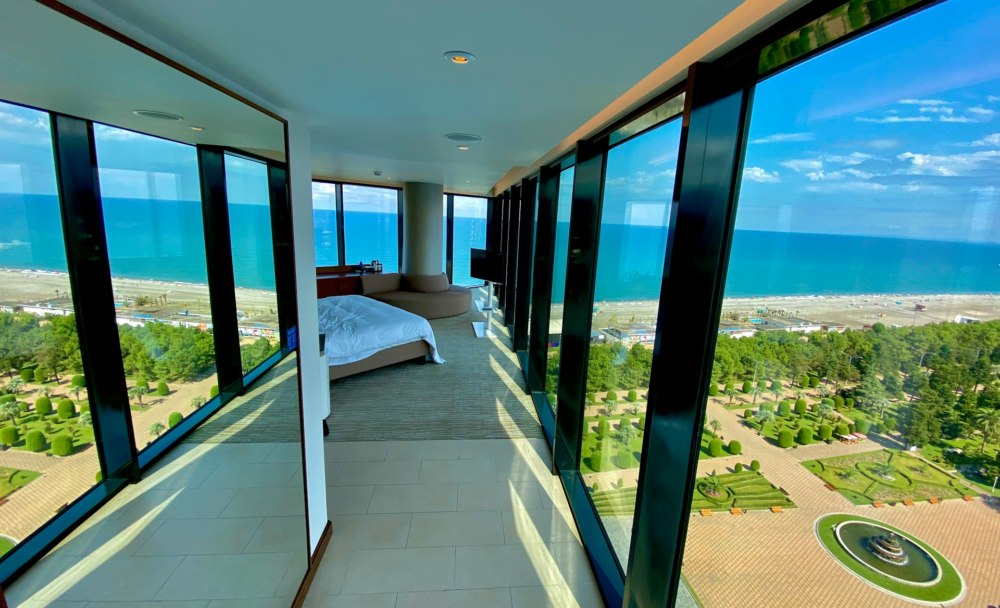

This was an interesting project that showcased my investigative and problem solving skills. The client needed to improve
its customer satisfaction and retention rates. I was tasked with identifying the factors that are most important to the
client's customers and hence how the client could improve their services around these factors.
I gathered the required data and completed a deep dive, using MicroSoft Excel, to produce a tailored analysis and visualization.
The client understood both the retention challenges they face as well as the churning rates that affect their
market share. The data-driven recommendations I provided enabled the client make sound decisions that improved
retention rates by 11% and reduced churning rates by 26%.

Sunshine Resort is a luxurious beachfront hotel management company that
wanted to optimize their reservation data.
I was consulted to provide actionable insights
and data-driven recommendations to
enhance guest experiences, improve hotel operations, and maximize revenue.
To achieve this, I collected and organized data related to bookings,
cancellations, customer preferences, and revenue.
Highlights: Data visualization dashboards showcasing key performance metrics and insights.
Predictive modeling notebooks demonstrating demand forecasting and revenue optimization techniques.
Customer segmentation analysis reports outlining target customer profiles and personalized marketing strategies.
Cancellation analysis presentations outlining mitigation strategies and performance tracking metrics.
Operational efficiency improvement proposals and implementation plans.
See the full story to understand how I was able to deliver this project on time with MicroSoft Excel.

A mid-sized electronics retail company, faced challenges in their sales
and shipping operations across multiple regions. I leveraged Power BI to analyze their dataset
and gain insights to address these issues and improve overall performance.
Through the use of Power BI, I was able to provide MaxCorps Electronics with actionable insights
and data-driven recommendations to address their sales and shipping challenges and improve
overall performance. By leveraging visualizations and analytics, the company was able to make
informed decisions, optimize operations, and drive business growth